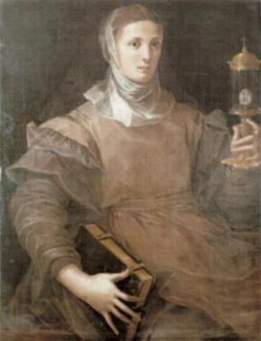
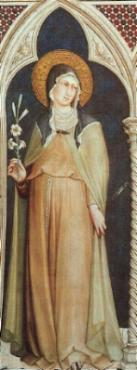
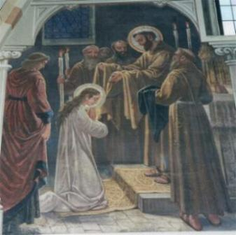
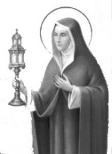
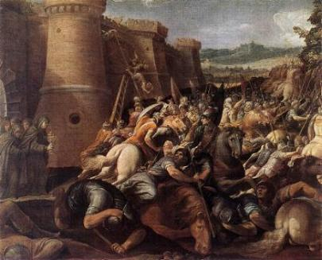
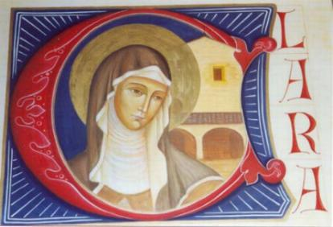
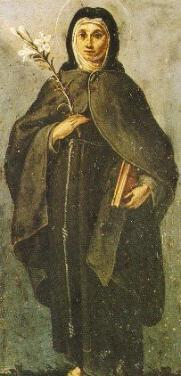

SUA VOCAÇÃO
Clara nasceu em Assis, no dia 11 de
Julho de 1194. Seu pai chamava-se Favorino Scifi e sua 
Desde jovem adquiriu o hábito de rezar diariamente e se mortificar, trazendo um cilÃcio com pelos ásperos sobre o corpo. Também exercitava com frequencia a piedade cristã, distribuindo esmolas e atendendo com disponibilidade as pessoas necessitadas que a procuravam. Fazia isto espontaneamente, como demonstração de seu sincero e fervoroso amor a DEUS.
Passaram-se os anos e aquela menina tornou-se moça alta e bonita. Aos 15 anos de idade estava assediada por diversos pretendentes, dos quais, um deles era de muito agrado de seus pais. Todavia, ela não queria conversar sobre o assunto casamento. Com muito respeito e educação, fugia das insinuações de seus progenitores. Até que um dia, diante da obstinada insistência de sua mãe, revelou que por vontade pessoal, havia consagrado sua virgindade a DEUS, como demonstração de amor e entrega total.
Seus pais ficaram abismados com a decisão e não concordaram, classificando o episódio como excesso de zelo cristão. Assim, com 16 anos de idade Clara Scifi começou a enfrentar uma intensa batalha de palavras e sentimentos contra seus pais, que não aceitavam a sua decisão.
Quase na mesma época, o jovem Francisco cuja conversão comovera a cidade de Assis, voltava de Roma com a autorização pontifÃcia para pregar o evangelho. E Clara ouviu-o diversas vezes na Igreja da cidade. Diante das palavras incisivas do Santo, começou a compreender que a vida que ele levava, era justamente aquela que ela se sentia atraÃda a seguir, porque estava perfeitamente convencida, de que aquela era a Vontade de DEUS.
Rufino e Silvestre, dois frades da Ordem de Francisco, também pertenciam à famÃlia dela e portanto, tinham um certo parentesco com Clara. Então foi fácil para ela trilhar o caminho até Francisco, diante de quem logo abriu o seu coração e revelou os seus anseios e projetos. Na verdade, o Santo já ouvira falar a respeito dela e agora, diante das palavras decididas de Clara, não teve dúvidas, recomendou que ela perseverasse e lutasse pelo seu ideal. Tornou seu guia espiritual.

“Entre as mulheres e moças de Assis, nenhuma irradiava tanta beleza e esplendor quanto à loura Clara Scifi.â€
Após a celebração eucarÃstica, quando começou a distribuição dos ramos bentos, as pessoas que estavam na Igreja se organizaram em filas, a fim de recebê-los das mãos do senhor Bispo Guido. Contudo, ela permaneceu sozinha em seu lugar, enquanto suas irmãs e sua mãe já se encontravam na balaustrada que separava o altar da assembléia. Vendo-a imóvel, com a cabeça baixa, sacudindo os ombros pelos soluços de um profundo choro, derramando lágrimas que inundavam sua face, o Bispo compreendeu o que se passava, porque tinha sido informado por Francisco a respeito do propósito dela. Por isto, com terna e paternal consideração, apanhou o ramo que ela não viera receber no altar e pessoalmente, foi a seu encontro no fundo da Igreja e lhe entregou.
Na noite seguinte Clara executou o plano que havia
concebido. Acompanhada por uma parenta chamada Bona Guelfucci fugiu de casa,
seguindo o caminho da Porciúncula. Os frades franciscanos que a esperavam,
vieram a seu encontro com tochas que iluminaram o caminho. Bem depressa,
ela se ajoelhou diante da imagem de NOSSA SENHORA na Igrejinha de Santa Maria
dos Anjos, fez uma oração de renúncia ao mundo
“por amor ao Sagrado e SantÃssimo MENINO JESUS, envolto em pobres paninhos e deitado
numa manjedoura.†Entregou aos frades sua veste luxuosa e vestiu
uma túnica de lã, semelhante à deles, ajustada ao corpo por um cinto de corda. Francisco
cortou a sua cabeleira de ouro e ela cobriu a cabeça com um espesso véu 
O refúgio de Clara, logo foi descoberto pelo seu pai, que em companhia de outros parentes vieram procurá-la, tentando fazê-la mudar de idéia. Mas ela foi irredutÃvel, de nada valeram as palavras, os rogos e promessas que fizeram, ela estava decidida a seguir a vida religiosa. Quando finalmente quiseram recorrer a força, para arrancá-la do Convento, ela correu para junto do altar e retirou o véu negro, mostrando-lhes a cabeça totalmente raspada, que significava o seu definitivo adeus ao mundo.
Na sequência dos dias, como sua famÃlia insistia obstinadamente em querer tira-la do Convento, Francisco decidiu transferi-la para outro Convento mais distante e melhor protegido, o Convento de Sant Ângelo em Panzo, que também pertencia à s Irmãs Beneditinas.
Todavia, o furor de Favorino cresceu muito mais, quando 16 dias após a fuga de Clara, sua irmã Inês também fugiu de casa e foi para o Convento de Sant Ângelo, a fim de se juntar à irmã no mesmo ideal de vida, para maior glória de DEUS. O pai havia colocado em Inês todas as suas esperanças, na ausência de Clara que era a filha mais velha, por ser ela também muito bonita e inteligente como Clara, e também porque havia acolhido suas recomendações e estava noiva, com o casamento marcado. Por isso ficou exasperado, sem saber o que fazer. Mandou chamar o seu irmão Monaldo e lhe pediu que reunisse uma dúzia de homens fortes e bem armados, e a trouxessem de volta, mesmo que fosse pela força.
Quando aqueles homens armados chegaram ao Convento, as Irmãs de Sant' Ângelo ficaram apavoradas e diante daquela demonstração de força, prometeram entregar-lhes Inês. Mas esta, embora jovem, estava disposta a tudo e se preparou para reagir. Foi espancada, pisoteada e levou socos em quantidade, da mesma forma que com galhardia tentava defender-se da brutal agressão. Arrastaram-na pelos cabelos para fora do Convento, enquanto desesperadamente ela gritava e pedia socorro a Clara. Esta, impotente para proteger a sua irmã, refugiou-se na sua cela e fervorosamente rezou, invocando a misericordiosa ajuda de DEUS. Eis que de súbito, aqueles doze homens robustos são interrompidos em sua festa de estupidez e brutalidade, não conseguem carregar Inês. O corpo da moça ficou pesado e rÃgido como se fosse um bloco compacto de pedra. Fizeram todas as tentativas possÃveis, em vão, não conseguiram arrastá-la. Tio Monaldo enraivecido, calçou uma luva de ferro com pontas e levantou o braço para esmagar a cabeça da moça... Ficou com o braço paralisado no ar, sem poder realizar o seu intento. Nesse momento, Clara chegou correndo para ajudar a sua irmã. Os homens percebendo que não havia meios de levar Inês, abandonaram o local e a deixaram caÃda no chão, semimorta.
Esta foi à última tentativa feita pela famÃlia para
resgatar as filhas. 
Anos mais tarde, uma outra irmã de Clara e Inês, chamada Beatriz, foi lhes fazer companhia no Convento de Sant Ângelo.
Entretanto, aquele Convento beneditino era um local provisório, porque elas tinham um ideal e não eram irmãs beneditinas. Assim, Francisco contando com a amizade dos Padres da Ordem dos Camaldulenses do Monte Subásio, que já lhe haviam cedido a Porciúncula, conseguiu agora também graciosamente, São Damião e o pequeno Convento anexo a Igreja. Ali, em companhia de poucas freiras, Clara foi habitar e iniciou o seu notável apostolado. Naquele pequeno Convento germinou e floriu uma vida de oração e trabalho, de pobreza e alegria, que por sua influência benéfica na Comunidade franciscana, pode ser denominada de “flor do movimento franciscanoâ€. O exemplo daquelas mulheres repercutiu longe. Muitas moças que não se achavam retidas pelos laços do mundo, acorreram a São Damião para viver como monjas. A primeira condição requerida para uma postulante ser admitida, era a mesma que Francisco exigia na Porciúncula: dar todos os seus bens aos pobres. Os meios de subsistência das freiras eram os mesmos dos frades: trabalho e a esmola. Enquanto algumas freiras ocupavam-se em trabalhar no claustro fazendo artesanato, na limpeza e cozinha, outras iam mendigar de porta em porta.
São Francisco escreveu para as freiras uma “Regra de Vidaâ€, que em substância se resumia na obrigação da pobreza evangélica. Também por sua intercessão, as freiras obtiveram a aprovação do Papa Inocêncio III, em 1215, ocasião em que Clara, por ordem expressa de Francisco, aceitou o tÃtulo de Abadessa de São Damião. Isto porque, até então, ele era o Chefe e Diretor das duas Ordens. Agora, em virtude da nomeação feita pelo Papa, Clara ficou superiora das freiras, fundando a Ordem das Clarissa, e Francisco superior dos frades, da Ordem dos Frades Menores.

Logo a seguir, ouviu-se o trotar de animais do lado de fora, indicando que os sarracenos tinham desistido do assédio ao Convento e partiam, com o objetivo de procurar uma “presa†mais fácil.
MORTE DE CLARA
Apesar das dificuldades que ocorreram e da rigidez
da Regra que ela impôs ao 
No verão de 1253, por motivo de sua grave doença, o cardeal Rinaldo, futuro Papa Alexandre IV, foi visitá-la em São Damião e após a Confissão, concedeu-lhe a indulgência plenária e remissão de todos os pecados.
A partir deste dia, as freiras se revezavam
diante de seu leito. Inês, sua irmã que era abadessa no Convento de Monticelli
e com quem não se encontrava há 30 anos, veio visitá-la. Ajoelhou-se ao lado
do seu leito e junto dela permaneceu em orações por longo tempo. Os dias
passavam e seu estado de saúde era gravÃssimo, faziam duas semanas que não
comia absolutamente nada, contudo, manifestava que se sentia bastante forte.
Neste dia, lembrou-se do falecido Francisco com doçura e gratidão, seu pai
espiritual que já havia partido para a eternidade. Pediu aos frades da Porciúncula,
seus amigos que sempre estavam presentes, que se aproximassem e lessem o
Evangelho da Paixão de NOSSO 
“Vai em paz minha alma, pois você tem um Guia seguro que lhe mostrará o caminho, Aquele que lhe criou, santificou, amou e não cessou de vigiá-la com a ternura de uma mãe que zela pelo filho único de seu amor. Dou graças e bendigo ao SENHOR porque ELE criou a minha vidaâ€.
Depois se calou, ficou imóvel. Perguntou-lhe uma freira: “A quem falava minha Madre?†Respondeu Clara: “A minha almaâ€.
Frei JunÃpero terminou a leitura do Evangelho e permaneceu em silêncio. Ela não disse mais nada... Com um suave sorriso nos lábios, partiu para a eternidade.
Clara foi canonizada em 1255 pelo Papa Alexandre IV. Seu corpo se encontra num bonito Mausoléu, na BasÃlica com o seu nome em Assis.